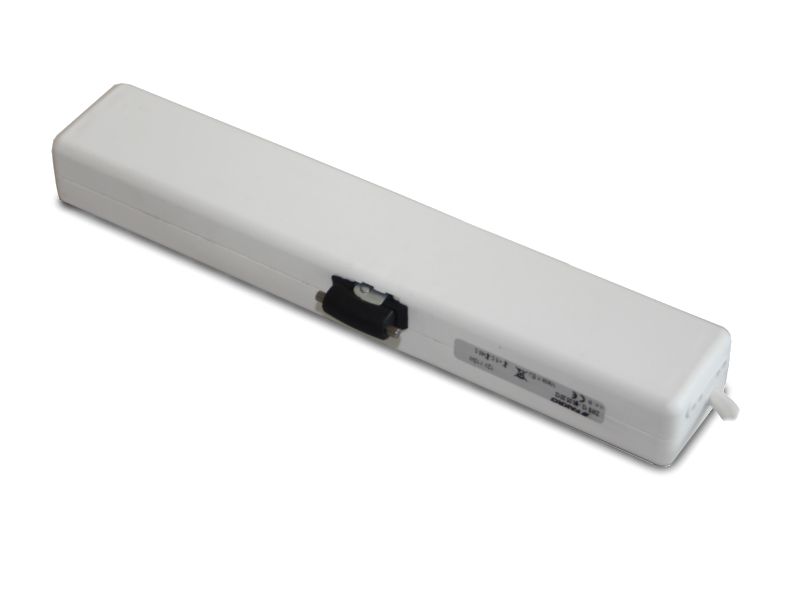
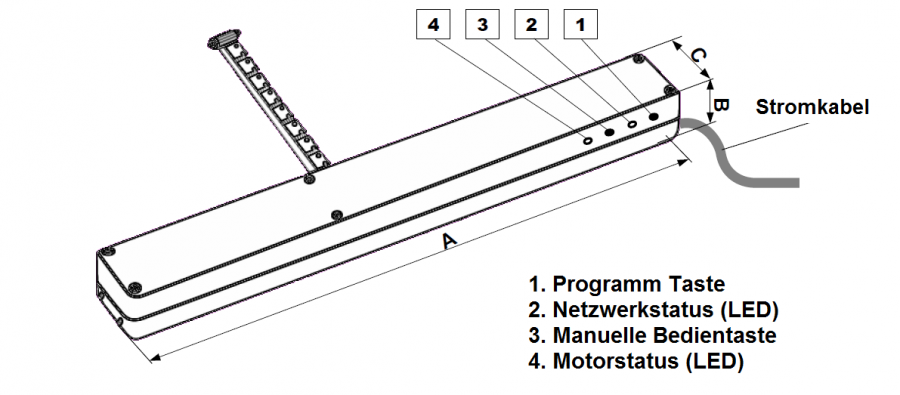

FAK_ZWS12
Firmware Version : 3.10 |
 |
KurzinfoA Dies ist ein Z-Wave Aktor. Inklusion und Exklusion werden durch einen Klick auf die Programm Taste bestätigt. Wenn der Fakro Kettenantrieb nicht in einem Z-Wave Netzwerk inkludiert ist, leuchtet die LED dauerhaft. Weitergehende Informationen finden sich in den jeweiligen Abschnitten dieses Handbuches. |
Produktbeschreibung
Der Kettenantrieb ZWS12 ist aufgrund kompakter Außenmaße und einfacher Einbauweise eine ideale Lösung für Dachfenster verschiedener Hersteller. Er ist mit dem System Z-Wave kompatibel. Der Kettenantrieb ist besonders gut zum Nachrüsten von Schwing- und Klapp-Schwingfenster geeignet.
Der maximale Ketten-Hub des ZWS12 beträgt 24cm. Der Antrieb ist mit einem integrierten Überlastschutz ausgestattet und fungiert gleichzeitig als ein Fensterschließ-Sensor. Das Gerät wird mit 12 V Gleichspannung versorgt. Das Netzteil muss mindestens 12 W Leistung liefern.
Installationsanleitung
Der Kettenantrieb für Klappfenster (12V) ist für die Steurung von Dachfenstern vorgesehen. Der Kettenantrieb ist mit einem 2-Wege Z-Wave Funkmodul ausgestattet. Das Gerät kann im Netz mit verschlüsseltem Transfer (SECURE) eingesetzt werden, wenn der Controller ist ebenfalls verschlüsselten Transfer unterstützt. Die Funktion des Motors ist identisch, egal ob er Secure oder Nicht-Secure Gerät inkludiert ist.
Die ZWS Kettenmotoren sind mit zwei Schutzschaltern ausgestattet:
- Schutzschalter bei max. Ketten-Hub
- Schutzschalter bei Überlastung (behilflich beim Schließen des Fensters)
Installieren Sie den ZWS Kettenmotor gemäß der unter folgenden Link erreichbaren Anleitung.
Lesen Sie vor der Montage bitte sorgfältig die untenstehenden Punkte, um Verletzungen oder Stromschläge zu vermeiden. Für die Montage des Kettenantriebs müssen folgende Anweisungen beachtet werden:
- Beachten Sie die Sicherheitshinweise! Die Verwendung des Kettenantriebes bringt trotz des Überlastungsschutzes Gefahren mit sich.
- Wenn ein Fenster mit einem Kettenantrieb ausgestattet und leicht zugänglich ist, z.B. wenn sich die Fensterunterkante in Höhe von weniger als 2,5 Metern vom Fußboden befindet, dann müssen entsprechende Maßnahmen getroffen werden, um Verletzungen zu vermeiden.
- Nach dem Auspacken muss das Gerät auf eventuelle mechanische Beschädigungen überprüft werden.
- Die Montage sollte von einem Fachmann gemäß der Montageanleitung durchgeführt werden.
- Vergewissern Sie sich vor dem Anschließen des Gerätes, dass das richtige Netzteil zur Stromversorgung installiert ist (12V Gleichspamnnung, min. 12 Watt, zweipoliges Kabel).
- Schliessen Sie den Kettenantrieb an und überprüfen Sie ihn auf Funktion ohne eine angeschlossene Last. Fahren Sie die Kette 5cm aus, und lassen Sie sie für die Montage in diesem Zustand.
- Kunststoffbeutel und Kleinteile der Verpackung müssen außerhalb der Reichweite von Kindern aufbewahrt werden.
- Der Kettenantrieb darf nur für Zwecke verwendet werden, für die er gebaut wurde. Der Hersteller übernimmt keine Haftung für Schäden durch anschgemäßen Gebrauch.
- Trennen Sie das Gerät von der Stromversorgung für alle Reinigungs-, Einstell- und Aufbauarbeiten.
- Zum Reinigen des Gerätes darf kein Verdünner oder Wasser verwendet werden. Das Gerät darf nicht unter Wasser getaucht werden.
- Reparaturen am Gerät sollten nur von qualifiziertem Fachpersonal durchgeführt werden.
- Die Stromzuleitung muss einen Querschnitt von mindestens 2x1mm^2 aufweisen. Für diesen Querschnitt darf die Kabellänge 30 Meter nicht überschreiten.
- Der Kettenmotor darf ausschließlich innerhalb von Gebäuden eingesetzt werden.
- Der Kettenmotor darf nicht für Rauchabzugsfenster verwendet werden.
Vorsicht bei der Benutzung! Der Motor entwickelt beim Schließen eine Zugkraft von 250N (entspricht 25kg).
Verhalten des Gerätes im Z-Wave Netz
I Im Auslieferungszustand ist das Gerät mit keinem Z-Wave-Netz verbunden. Damit es mit anderen Z-Wave Geräten kommunizieren kann, muss es in ein bestehendes Z-Wave Netz eingebunden werden. Dieser Prozess wird bei Z-Wave Inklusion genannt. Geräte können Netzwerke auch wieder verlassen. Dieser Prozess heißt bei Z-Wave Exklusion. Beide Prozesse werden von einem Controller gestartet, der dazu in einen Inklusion- bzw. Exklusion-Modus geschaltet werden muss. Das Handbuch des Controllers enthält Informationen, wie er in diese Modi zu schalten ist. Erst wenn der Controller des Z-Wave Netzes im Inclusion-Modus ist, können Geräte hinzugefügt werden. Das Verlassen des Netzes durch Exklusion führt zum Rücksetzen dieses Gerätes in den Auslieferungszustand.
Bringen Sie Ihren Z-Wave Controller in den Inklusions-/Exklusions-Modus. Drücken Sie die Programm Taste zum bestätigen.
Bedienung des Gerätes
Bevor Sie den Kettenmotor nach der Montage endgültig verwenden können, müssen Sie folgende Schritte durchführen:
- 1. Inkludieren Sie das Gerät mit einem Controller in ein Z-Wave Netzwerk.
- 2. Assoziieren Sie das Gerät mit entsprechenden Bedienelementen (Schalter).

Das Gerät kann in verschiedenen Modi verwendet werden:
"PROTECTION" - gesicherter Modus zur Verhinderung von unbeabsichtigter Bedienung z.B. von Kindern. Die Controller unterstützen dabei drei Stufen.
Beachte: Die genaue Beschreibung zum Aktivieren und Deaktivieren des gesicherten Modus entnehmen Sie bitte der Bedienungsanleitung Ihres Controllers.
"RETURN ROUTE ASSIGNING" - abhängig von der Version kann das Gerät mit einem Regensensor-Eingang ausgestattet werden. Damit ist es möglich dieses Gerät mit anderen Aktoren zu verlinken, die keinen Regensensor-Eingang haben. Dafür muss die "ASSIGN" Funktion am Controller zu aktivieren. Das kann für verschiedene Controller variieren, wird aber standardmäßig wie folgt gemacht:
Starten der "ASSIGN" Funktion - Programm Taste am Aktor ohne Regensensor-Eingang drücken (1 Sekunde) - Programm Taste am Aktor mit Regensensor-Eingang drücken (1 Sekunde).
Beachte: Die genaue Beschreibung zum Aktivieren und Deaktivieren der "ASSIGN" Funktion entnehmen Sie bitte der Bedienungsanleitung des entsprechenden Herstellers.
"All ON" oder "All OFF" - es ist möglich festzulegen, ob das Gerät die "Alle An" und "Alle Aus" Funktion unterstützt.
Beachte: Die genaue Beschreibung zur "All ON" oder "All OFF" Funktion entnehmen Sie bitte der Bedienungsanleitung des entsprechenden Herstellers.
"SECURITY" Das Gerät unterstützt den "SECURITY" Modus. Dieser ermöglicht geschützte Kommunikation zwischen den Geräten im Netzwerk.
Beachte: Der "SECURITY" Modus kann nur voll genutzt werden, wenn der Z-Wave Controller die funktion unterstützt.
"MANUAL OPERATING" Manuelle Bedienung ist direkt nach dem Anstecken der Stromversorgung mit der Manuellen Bedientaste möglich. Manuelle Bedienung funktioniert sequenziell; einmaliges Drücken der Taste für nächten Befehl: Start, Stop, Start in andere Richtung, Stop.
Beachte: Die Netzwerk LED zeigt den Status des Gerätes. Blinkt diese, ist der gesicherte Modus aktiviert, und die Bedienung des Gerätes ist eventuell nicht möglich.
Node Information Frame
NIF Der Node Information Frame ist die Visitenkarte eines Z-Wave Gerätes. Es ist ein spezielles Datenpaket, in dem der Gerätetyp sowie die Funktionen des Gerätes bekanntgemacht werden. Inklusion und Exklusion eines Gerätes wird von diesem mit einem Node Information Frame beantwortet. Zusätzlich kann der Node Information Frame für bestimmte Konfigurationsprozesse des Z-Wave Netzes - zum Beispiel das Setzen von Assoziationen - benötigt werden.
Der Einfach-Klick auf die Programm Taste führt zum Senden eines Node Information Frame.
Assoziationen - wie werden andere Geräte gesteuert?
A Z-Wave Geräte können andere Geräte direkt steuern. Diese direkte Steuerung heißt in Z-Wave Assoziation. In den steuernden Geräten muss dazu die Geräte-ID des zu steuernden Gerätes hinterlegt werden. Dies erfolgt in sogenannten Assoziationsgruppen. Eine Assoziationsgruppe ist immer an ein Ereignis im steuernden Gerät gebunden (Tastendruck oder Auslösen eines Sensors). Bei Eintritt dieses Ereignisses wird an alle in einer Assoziationsgruppe hinterlegten Geräte ein Steuerkommando gesendet.
Assoziationsgruppen:
| 1 | (max. Anzahl Geräte: 5) |
Setzen und Löschen von Assoziationsbeziehungen
SA Assoziationen können entweder per Funkkommando oder direkt am Gerät gesetzt werden.
Bringen Sie Ihren Z-Wave Controller in den Assoziations-Modus. Drücken Sie die Programm Taste zum bestätigen.
Technische Daten
| Explorer Frames | Ja |
| SDK | 4.51 |
| Geräteart | Slave with routing capabilities |
| Allgemeiner Z-Wave-Gerätetyp | Multilevel Switch |
| Spezieller Z-Wave-Gerätetyp | Motor Control Class B |
| Router | Ja |
| FLiRS | Nein |
| Firmware Version | 3.10 |